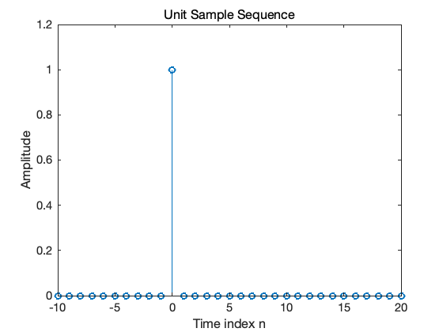
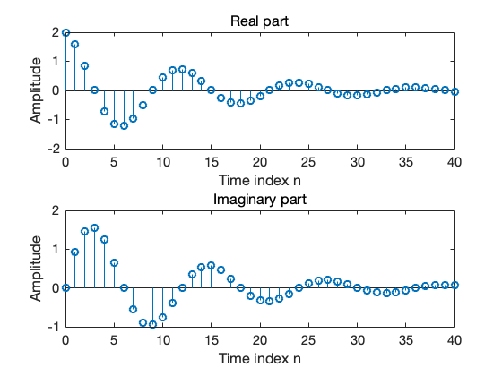
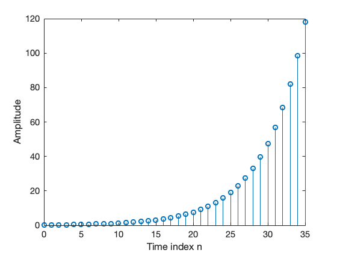
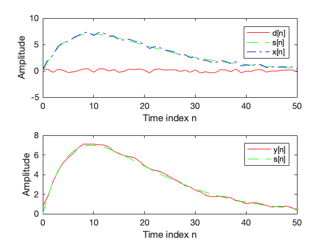
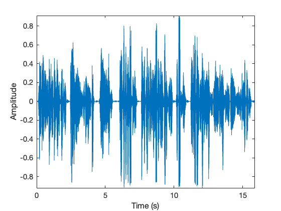

2. 离散时间信号¶
2.1. 生成序列¶
2.1.1. 单位样本序列和单位阶跃序列生成¶
[1]:
% Generation of a Unit Sample Sequence
clf;
% Generate a vector from -10 to 20
n = -10:20;
% Generate the unit sample sequence
u = [zeros(1,10) 1 zeros(1,20)];
% Plot the unit sample sequence
stem(n,u);
xlabel('Time index n');ylabel('Amplitude');
title('Unit Sample Sequence');
axis([-10 20 0 1.2]);

注解
问题：
根据上述产生单位样本序列的方法，编写单位阶跃序列的代码；
2. 试分析下面几个函数的功能：
axis, title, xlabel, ylabel
2.1.2. 指数信号¶
[2]:
% Generation of a complex exponential sequence
clf;
c = -(1/12)+(pi/6)*i;
K = 2;
n = 0:40;
x = K*exp(c*n);
subplot(2,1,1);
stem(n,real(x));
xlabel('Time index n');ylabel('Amplitude');
title('Real part');
subplot(2,1,2);
stem(n,imag(x));
xlabel('Time index n');ylabel('Amplitude');
title('Imaginary part');

注解
问题：
哪个参数控制了序列的增长或者衰减率？
哪个参数控制了序列的幅度？
如果将上述代码中的参数
c修改为(1/12)+(pi/6)*i，结果是什么？函数
real,imag,subplot的作用是什么？
[3]:
% Generation of a real exponential sequence
clf;
n = 0:35; a = 1.2; K = 0.2;
x = K*a.^n;
stem(n,x);
xlabel('Time index n');ylabel('Amplitude');

注解
问题:
哪个参数控制了序列的增长或者衰减率？
哪个参数控制了序列的幅度？
如果将上述代码中的
^和.^的区别是什么？将上述代码中的参数K修改为20，参数a改为0.9，运行的结果是什么？
上述代码产生的序列长度为多少？这个长度是通过哪个参数来控制的？
2.2. 简单的序列运算¶
2.2.1. 信号平滑¶
[4]:
% Signal Smoothing by Averaging
clf;
R = 51;
d = 0.8*(rand(R,1) - 0.5); % Generate random noise
m = 0:R-1;
s = 2*m.*(0.9.^m); % Generate uncorrupted signal
x = s + d'; % Generate noise corrupted signal
subplot(2,1,1);
plot(m,d','r-',m,s,'g--',m,x,'b-.');
xlabel('Time index n');ylabel('Amplitude');
legend('d[n] ','s[n] ','x[n] ');
x1 = [0 0 x];x2 = [0 x 0];x3 = [x 0 0];
y = (x1 + x2 + x3)/3;
subplot(2,1,2);
plot(m,y(2:R+1),'r-',m,s,'g--');
legend( 'y[n] ','s[n] ');
xlabel('Time index n');ylabel('Amplitude');

注解
问题:
信号x1,x2,x3和原始信号x之间的关系是什么？
函数
lenged的作用是什么？
2.3. 从声音文件中读取信号并显示波形¶
[5]:
% load the speech signal and then plot
clf;
[y,fs] = audioread('malevoice.wav');
t = [0:length(y)-1]/fs;
plot(t,y)
xlabel('Time (s)')
ylabel('Amplitude')
axis tight

[6]:
% Using sound function to play audio
sound(y,fs);